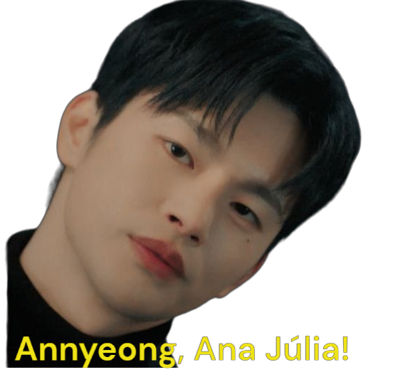

Feliz Aniversário, que o Senhor te abençoe nessa data e que você continue com esse amor pelo reino de Deus e suas obras, pelo ministério de dança, pela sua família e amigos. Que nesse novo ciclo de 19 anos, a graça e a paz de Deus estejam abundantemente sobre você, minha amiga dupla de Doramas! Que cada dia seja repleto das bênçãos divinas, guiando seus passos e enchendo seu coração de alegria. Que a luz do Senhor ilumine seu caminho, proporcionando sabedoria, amor e gratidão em cada experiência. Que este ano seja marcado por conquistas, superações e momentos inesquecíveis ao lado daqueles que ama. Que a presença do Espírito Santo esteja sempre contigo, fortalecendo sua fé e enchendo sua vida de significado. Que, além disso, seu ministério de dança continue sendo uma expressão bela e inspiradora de louvor e adoração. Que cada movimento seja guiado pela presença divina, transmitindo a alegria e a beleza da fé que habita em seu coração. Que, através dessa expressão artística, você possa compartilhar a mensagem do Evangelho e espalhar a paz que excede todo entendimento. Feliz aniversário! Que este seja apenas o início de um ano maravilhoso, repleto de realizações, bênçãos divinas e momentos significativos tanto em seu ministério de dança quanto em todas as áreas da sua vida! 🎂🙏
PS: foi um presente simplizinho mas feito com muito carinho (principalmente o querido Rowoon, True Beauty e o Myul Mang), estou com essa ideia desde 26/11/2023 😊
Enfim, Feliz Aniversário (novamente) Ana Júlia!